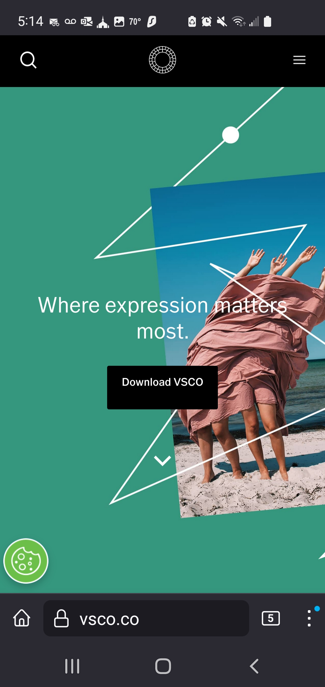
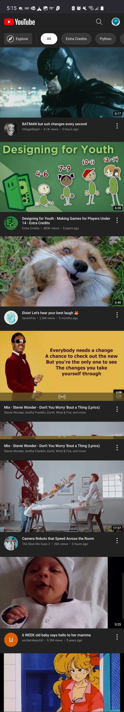
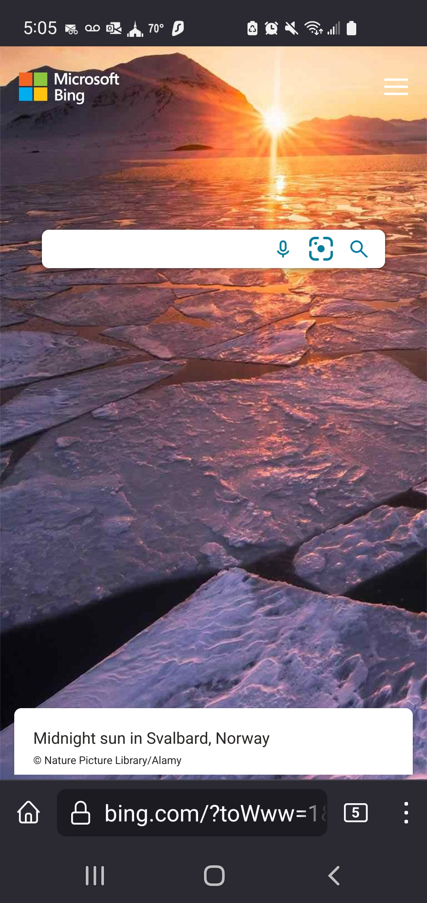

White Space
I've always found the VSCO layout very satisfying. Their mobile site is very simple, but they always put effort into creating an aesthetically pleasing interaction. They prioritize white space on all versions of their application. VSCO knows what they are about and they put the whole focus on downloading the mobile app. There's plenty of space everywhere on the site, but this page specifically is surrounded by white space. It centers the download link in the colors. It gives the website some peace and sets it apart from its busy counterparts. I've always admired VSCO use of white space and I plan on using white space in any sites I make for myself in the future.
Fitts' Law
YouTube's business model is based around keeping users on their site as long as possible. To facilitate that there are large thumbnails of other videos everywhere. They take up most of the screen and all you have to do is tap. Fitts' law says that the smaller the icon and the farther you have to go the longer it will take, which would inevitably lessen viewer retention. I've suffered because of YouTube's bombardment of media. Even on desktop there is an endless supply of videos tailored for me waiting for consumption. Their design is too good. Many social media sites hire behavioral psychologists to optomize their sites. I don't know if YouTube did that, but I wouldn't be surprised. I will definitely keep it in mind while working on my sites in the future.
Contrast
Visual hierarchy is also prominent on this site, but the contrast between the white search bar and dark background pulls your eye right to the search bar. Bing is famous for being not as good as Google. Google is famous for its simple homepage. It is a site about searching so the focus is on searching. Here Bing has put their own spin on that concept. They can have a less plain design while maintaing the search bar focal point.